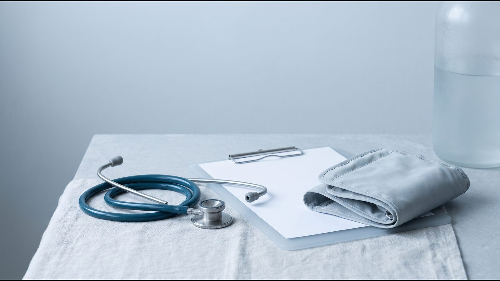

Ожирение как болезнь: степени, диагностика и лечение

Почему ожирение признано болезнью
Ожирение — хроническая болезнь: так его определяет ВОЗ в информационном бюллетене 2026 года. Избыток жировой ткани меняет работу органов и повышает риск диабета 2 типа, сердечно-сосудистых болезней, болезней печени и почек и нескольких видов рака. В 2024 году с ожирением жили 1,1 млрд человек, то есть каждый седьмой в мире, а доля взрослых с ожирением с 1990 года выросла более чем вдвое.
Европейская ассоциация по изучению ожирения (EASO) в 2024 году описала его как многофакторную, хроническую, рецидивирующую неинфекционную болезнь. «Рецидивирующая» значит, что после похудения вес склонен возвращаться, поэтому лечение планируют надолго. По оценке, на которую ссылается ВОЗ, в 2023 году индекс массы тела (ИМТ) выше оптимального стал причиной около 3,7 млн смертей.
ВОЗ отдельно подчёркивает, что ожирение — ответственность общества, а не только отдельного человека: питание и движение сильно зависят от среды, доступа к еде и условий жизни. Поэтому корректно говорить «человек с ожирением». Диагноз описывает состояние здоровья, которое можно лечить, и ничего не говорит о характере.
Клиническое и доклиническое ожирение: классификация 2025
В 2025 году комиссия журнала Lancet Diabetes & Endocrinology (Rubino F и соавт.) предложила делить ожирение по тому, нарушена ли уже работа органов. Документ подготовили 58 экспертов, его поддержали 76 организаций в мире. Главная мысль: сам по себе избыток жира ещё не означает болезнь органов, но повышает риск.
| Доклиническое ожирение | Клиническое ожирение | |
|---|---|---|
| Что это | Избыток жира, органы и ткани работают нормально | Хроническая системная болезнь: избыток жира уже нарушает работу органов или ограничивает повседневную жизнь |
| Риски | Повышенный риск перейти в клиническое ожирение, диабета 2 типа, сердечно-сосудистых болезней, некоторых видов рака, психических расстройств | Поражение органов уже есть: это самостоятельная болезнь |
| Примеры признаков | Признаков поражения органов нет | Апноэ сна, повышенное давление, сочетание высокого сахара и триглицеридов с низким «хорошим» холестерином, жировая болезнь печени с фиброзом, хроническая боль и скованность в коленных или тазобедренных суставах, нарушение овуляции, сердечная недостаточность |
Чтобы говорить об ожирении, комиссия требует подтвердить именно избыток жира одним из трёх способов. Это прямое измерение жировой массы (например, денситометрия DEXA), ИМТ вместе с одним показателем талии или два показателя талии независимо от ИМТ. При ИМТ выше 40 избыток жира считают очевидным без дополнительных измерений.
Для взрослых комиссия определила 18 критериев клинического ожирения, для детей и подростков 13. Их проверяет врач: часть видна при осмотре и из жалоб, часть по анализам и обследованиям.
EASO в 2024 году предложила похожий подход: диагноз ставят с учётом того, как жир влияет на здоровье. Для оценки жира на животе там выбрали отношение талии к росту как более точный маркер сердечно-сосудистого и метаболического риска, чем окружность талии.
Степени по ИМТ и их ограничения
ИМТ считают так: вес в килограммах, делённый на рост в метрах в квадрате. В примере ВОЗ: 70 кг / 1,75² = 22,9. Степени ожирения для взрослых одинаковы у ВОЗ и в NICE NG246 (2025).
| ИМТ, кг/м² | Категория |
|---|---|
| меньше 18,5 | Недостаточная масса тела |
| 18,5–24,9 | Нормальная масса тела |
| 25,0–29,9 | Избыточный вес (предожирение) |
| 30,0–34,9 | Ожирение 1 степени |
| 35,0–39,9 | Ожирение 2 степени |
| 40 и больше | Ожирение 3 степени |
Комиссия Lancet советует использовать ИМТ для скрининга и статистики по населению, а не как индивидуальный показатель здоровья. NICE тоже перечисляет ситуации, где его нужно толковать осторожно:
- Большая мышечная масса. ИМТ не отличает мышцы от жира.
- Возраст 65+. Врач учитывает сопутствующие болезни и возможный защитный эффект немного более высокого ИМТ в старшем возрасте.
- Этническое происхождение. Для людей южноазиатского, китайского, другого азиатского, ближневосточного, африканского и афро-карибского происхождения пороги ниже: избыточный вес от 23, ожирение от 27,5.
- Жир на животе при нормальном ИМТ. Поэтому NICE советует при ИМТ до 35 считать ещё отношение талии к росту: 0,4–0,49 без повышенного риска, 0,5–0,59 риск повышен, от 0,6 высокий. Простой ориентир: талия должна быть меньше половины роста.
- Дети и подростки. Взрослые пороги им не подходят, ВОЗ оценивает ИМТ с учётом возраста и пола.
Оба показателя можно посчитать в калькуляторе ИМТ и талии.
Что вызывает ожирение
Причины ожирения ВОЗ описывает как сложное взаимодействие среды, психосоциальных влияний и биологической предрасположенности. Нарушается регуляция аппетита, энергетического баланса и работы жировой ткани, а генетические различия влияют на то, насколько человек уязвим. Комиссия Lancet добавляет, что причины многофакторные и до конца не изучены.
- Генетика. Гены влияют на склонность к набору веса. Есть и редкие генетические формы (например, дефицит POMC или LEPR, синдром Барде — Бидля), для которых в ЕС одобрено отдельное лечение.
- Среда. ВОЗ пишет о среде, которая ограничивает доступ к здоровой и доступной по цене еде и безопасному движению. По данным ВОЗ, 31 % взрослых в мире физически неактивны.
- Лекарства. Руководство Endocrine Society (2015) среди лекарственных причин набора веса называет некоторые антидепрессанты и антипсихотики, противосудорожные препараты, глюкокортикоиды, инсулин и производные сульфонилмочевины, бета-блокаторы. Самостоятельно отменять эти лекарства нельзя: врач может обсудить альтернативу, более нейтральную по отношению к весу.
- Гормоны и возраст. По данным Американской тиреоидной ассоциации, со сниженной функцией щитовидной железы у большинства людей может быть связано около 2,3–4,5 кг, в основном за счёт соли и воды, а после лечения способность похудеть такая же, как у других. NHS среди причин называет также синдром Кушинга, синдром поликистозных яичников (СПКЯ), возраст от 55 лет и менопаузу; в исследовании SWAN (JCI Insight, 2019) в начале менопаузального перехода скорость накопления жира удваивалась.
- Сон. В небольшом исследовании (Spiegel, Ann Intern Med, 2004) двое суток короткого сна повысили уровень гормона голода грелина на 28 % и чувство голода на 24 %.
- Пищевое поведение и настроение. Расстройство приступообразного переедания, по данным NIDDK, есть примерно у 1,25 % женщин и 0,42 % мужчин, и у большинства людей с ожирением его нет. Депрессию и расстройства пищевого поведения NHS тоже относит к факторам набора веса.
Как врач ставит диагноз
Диагноз начинается с измерений, но не заканчивается ими. Врач выясняет, есть ли избыток жира, откуда он и сказался ли уже на здоровье. Что обычно входит в оценку (по рекомендациям EASO для первичного звена 2019 года, NICE NG246 и критериям комиссии Lancet):
- Измерения. Вес, рост, ИМТ, окружность талии и отношение талии к росту.
- История веса. Как менялся вес с детства, когда и почему начался набор (беременность, лекарства, меньше движения), прошлые попытки похудеть и циклы «похудел — набрал».
- Образ жизни и самочувствие. Питание, переедание и ночная еда, физическая активность, сон, стресс, настроение.
- Семья и лекарства. Ожирение и сердечно-сосудистые болезни у родственников, полный список препаратов, которые вы принимаете.
- Признаки клинического ожирения. Давление, дыхание во сне, суставы, менструальный цикл, печень.
- Анализы при необходимости. EASO первыми называет глюкозу натощак, липидограмму, печёночные пробы и креатинин; дальше, в зависимости от ситуации, ТТГ (гормон, по которому оценивают работу щитовидной железы) и другие обследования.

Для онлайн-консультации талию можно измерить дома по методике NICE. Найдите нижний край рёбер и верхний край тазовых костей, оберните сантиметровую ленту посередине между ними (чуть выше пупка) и сделайте замер на обычном выдохе. Затем разделите талию на рост в одинаковых единицах: например, 96,5 см / 170 см = 0,57.
NICE NG246 советует лечить выявленные сопутствующие болезни сразу, не дожидаясь, пока человек похудеет. В Avelis Clinic консультацию проводят врачи-эндокринологи онлайн и при необходимости назначают анализы. Что подготовить заранее, описано в статье подготовка к консультации эндокринолога.
Ступенчатое лечение
Лечение ожирения ВОЗ описывает как длительную помощь из нескольких составляющих: изменение поведения, консультирование по питанию, психологическая поддержка, лекарства, метаболическая и бариатрическая хирургия (операции на желудке или кишечнике для снижения веса). Каждый следующий шаг добавляется к предыдущему, а не заменяет его. Цель, по EASO, шире килограммов: меньше осложнений, лучше качество жизни и физическая форма.
| Шаг | Что входит | Кому рассматривают |
|---|---|---|
| 1. Образ жизни | Умеренный дефицит энергии, питание, движение, сон, поддержка | Всем людям с избыточным весом и ожирением |
| 2. Лекарства на фоне шага 1 | Препараты, одобренные регуляторами для контроля веса | ИМТ от 30 или от 27 с сопутствующей болезнью (инструкции EMA) |
| 3. Хирургия и пожизненное наблюдение | Метаболическая или бариатрическая операция | ИМТ от 35; рассматривают и при 30–34,9 с метаболической болезнью (ASMBS/IFSO, 2022) |
Шаги не всегда идут по очереди. Врач выбирает их по степени ожирения, осложнениям и опыту прошлого лечения.
Образ жизни
Основа любого плана: питание с умеренным дефицитом энергии без жёстких несбалансированных диет, которые NICE не рекомендует. Как составить такой рацион, описано на странице питание для похудения. ВОЗ (2020) советует взрослым 150–300 минут умеренной или 75–150 минут интенсивной активности в неделю и силовые упражнения не реже двух раз в неделю. NICE предупреждает, что людям, которые уже похудели, может понадобиться 60–90 минут активности в день, чтобы удержать результат.
Даже умеренное похудение имеет значение. NHS отмечает, что потеря 5–10 % массы тела может улучшить здоровье. В исследовании DPP (NEJM, 2002) люди с нарушенным уровнем сахара, которые стремились похудеть на 7 % и двигаться 150 минут в неделю, заболевали диабетом 2 типа на 58 % реже, чем в группе плацебо.
Медикаментозное лечение
Лекарства рассматривают, когда изменений образа жизни недостаточно: по инструкциям EMA, при ИМТ от 30 или от 27 и сопутствующей болезни (например, предиабет, гипертензия, апноэ сна). Все препараты для контроля веса применяют вместе с питанием и движением (NICE NG246). EASO в 2025 году назвала семаглутид (Wegovy®) и Mounjaro® (тирзепатид) препаратами выбора, когда нужно значительное снижение веса.
Врач оценивает эффект через несколько месяцев. Endocrine Society (2015) советует пересмотреть лечение, если за 3 месяца потеряно меньше 5 % веса, NICE для семаглутида называет срок 6 месяцев. Классы лекарств, их эффект и ограничения описаны на страницах медикаментозное лечение ожирения и инъекции GLP-1.
Бариатрическая хирургия
Критерии ASMBS и IFSO 2022 года заменили давние пороги NIH 1991 года. Операцию рекомендуют при ИМТ от 35 независимо от сопутствующих болезней, при диабете 2 типа с ИМТ от 30, а при ИМТ 30–34,9 с метаболической болезнью её стоит рассмотреть. Для людей азиатского происхождения пороги ниже, а верхней границы возраста нет.
NICE NG246 осторожнее: направлять на оценку советует при ИМТ от 40 или 35–39,9 с серьёзной болезнью, которую улучшит похудение. Обязательное условие NICE — согласие на пожизненное наблюдение после операции.
Частые вопросы
Чем ожирение отличается от избыточного веса?
По ВОЗ, избыточный вес у взрослых начинается с ИМТ 25, ожирение с ИМТ 30, то есть ожирение — более тяжёлая часть избыточного веса. Новые подходы смотрят не только на ИМТ. EASO (2024) относит к ожирению и людей с ИМТ 25–30, если жир накапливается на животе и уже есть осложнения.
Кто лечит ожирение?
Ожирение диагностирует и лечит врач. ВОЗ советует укреплять первичную медицинскую помощь, чтобы там выявляли, диагностировали и лечили ожирение, а при необходимости сочетали консультирование по питанию, психологическую поддержку, лекарства и хирургию; по NHS, семейный врач консультирует и при необходимости направляет на лечение. В Avelis Clinic консультируют врачи-эндокринологи онлайн, консультация бесплатная.
Можно ли вылечить ожирение навсегда?
EASO описывает ожирение как хроническую рецидивирующую болезнь, поэтому цель лечения — длительный контроль веса и его осложнений. В исследовании SURMOUNT-4 (JAMA, 2024) люди, которых после 36 недель тирзепатида перевели на плацебо, за следующие 52 недели набрали в среднем 14 % веса, а те, кто продолжил лечение, потеряли ещё 5,5 %. NICE советует поддерживать человека и после завершения медикаментозного лечения.
Ожирение 1 степени — это опасно?
По классификации ВОЗ ИМТ 30–34,9 — это ожирение 1 степени, а само ожирение ВОЗ считает хронической болезнью. Насколько оно опасно, зависит от того, где накапливается жир и нарушена ли работа органов. Поэтому врач смотрит на талию, давление, анализы и признаки клинического ожирения. Даже потеря 5–10 % веса может улучшить здоровье, а с ИМТ от 30 по инструкциям EMA уже могут рассматриваться лекарства.
Что дальше
Начните со своих цифр: посчитайте ИМТ и отношение талии к росту или пройдите тест на 3 минуты. С результатами и списком своих лекарств запишитесь на онлайн-консультацию эндокринолога: врач оценит степень ожирения, признаки осложнений и предложит план.
Источники
- World Health Organization. Obesity and overweight. Fact sheet, 2026. https://www.who.int/news-room/fact-sheets/detail/obesity-and-overweight
- Rubino F et al. Definition and diagnostic criteria of clinical obesity. Lancet Diabetes Endocrinol, 2025. https://doi.org/10.1016/S2213-8587(24)00316-4
- Busetto L, Dicker D, Frühbeck G et al. A new framework for the diagnosis, staging and management of obesity in adults. Nat Med, 2024. https://doi.org/10.1038/s41591-024-03095-3
- NICE. Overweight and obesity management (NG246), 2025. https://www.nice.org.uk/guidance/ng246
- WHO Regional Office for Europe. A healthy lifestyle – WHO recommendations (архивная версия, 2024). https://web.archive.org/web/20241229133955/https://www.who.int/europe/news-room/fact-sheets/item/a-healthy-lifestyle---who-recommendations
- Apovian CM et al. Pharmacological management of obesity: an Endocrine Society clinical practice guideline. J Clin Endocrinol Metab, 2015. https://doi.org/10.1210/jc.2014-3415
- American Thyroid Association. Thyroid and Weight. https://www.thyroid.org/thyroid-and-weight/
- NHS. Overweight and obesity in adults. https://www.nhs.uk/conditions/overweight-and-obesity/
- Greendale GA et al. Changes in body composition and weight during the menopause transition. JCI Insight, 2019. https://doi.org/10.1172/jci.insight.124865
- Spiegel K, Tasali E, Penev P, Van Cauter E. Brief communication: Sleep curtailment in healthy young men is associated with decreased leptin levels, elevated ghrelin levels, and increased hunger and appetite. Ann Intern Med, 2004. https://doi.org/10.7326/0003-4819-141-11-200412070-00008
- NIDDK. Binge Eating Disorder: Definition & Facts. https://www.niddk.nih.gov/health-information/weight-management/binge-eating-disorder/definition-facts
- EMA. Imcivree (setmelanotide): EPAR. https://www.ema.europa.eu/en/medicines/human/EPAR/imcivree
- WHO. Physical activity. Fact sheet, 2024. https://www.who.int/news-room/fact-sheets/detail/physical-activity
- Durrer Schutz D et al. European Practical and Patient-Centred Guidelines for Adult Obesity Management in Primary Care. Obes Facts, 2019. https://pmc.ncbi.nlm.nih.gov/articles/PMC6465693/
- Bull FC et al. World Health Organization 2020 guidelines on physical activity and sedentary behaviour. Br J Sports Med, 2020. https://doi.org/10.1136/bjsports-2020-102955
- Knowler WC et al. Reduction in the incidence of type 2 diabetes with lifestyle intervention or metformin. N Engl J Med, 2002. https://doi.org/10.1056/NEJMoa012512
- EMA. Wegovy: Product Information (SmPC), 2026. https://www.ema.europa.eu/en/documents/product-information/wegovy-epar-product-information_en.pdf ; EMA. Mounjaro: EPAR. https://www.ema.europa.eu/en/medicines/human/EPAR/mounjaro
- McGowan B, Ciudin A et al. Framework for the pharmacological treatment of obesity and its complications from the European Association for the Study of Obesity (EASO). Nat Med, 2025. https://www.nature.com/articles/s41591-025-03765-w
- Eisenberg D et al. 2022 ASMBS and IFSO: Indications for Metabolic and Bariatric Surgery. Surg Obes Relat Dis, 2022. https://pubmed.ncbi.nlm.nih.gov/36280539/
- Aronne LJ et al. Continued Treatment With Tirzepatide for Maintenance of Weight Reduction in Adults With Obesity: The SURMOUNT-4 Randomized Clinical Trial. JAMA, 2024. https://pubmed.ncbi.nlm.nih.gov/38078870/
Материал носит информационный характер и не заменяет консультацию врача. Препараты назначает врач после консультации.
Читайте также